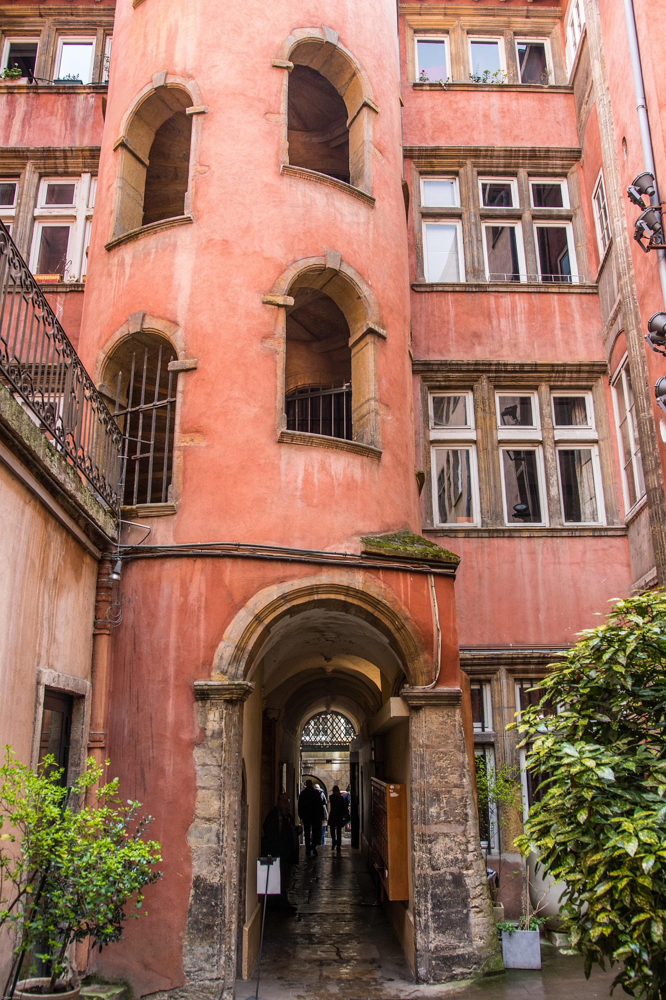

Stadt Lyon | Information 2026
Lyon erleben
Im Zusammenfluss entsteht Identität. Lyon verbindet geschichtliche Tiefe mit Kultur, Wissenschaft und urbanem Leben am Wasser.
Stadt Lyon | Information 2026
Im Zusammenfluss entsteht Identität. Lyon verbindet geschichtliche Tiefe mit Kultur, Wissenschaft und urbanem Leben am Wasser.

Zwei Flüsse. Zweitausend Jahre.
Geschichte trifft GegenwartVon Lugdunum über die Renaissance bis zur heutigen Métropole: Lyon entwickelt sich kontinuierlich weiter, ohne seine Herkunft zu verlieren.
Fête des Lumières, Nuits de Fourvière, Museen und Bühnen schaffen ein dichtes Programm mit internationaler Ausstrahlung.
Lage
Confluence von Rhône und Saône
Profil
Architektur, Gastronomie, Forschung, Kreativwirtschaft
Signatur
Präzise Stadtstruktur mit hoher Lebensqualität